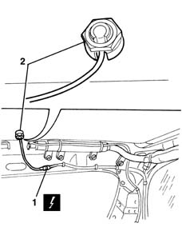
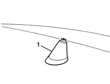

5570T26 aerial for car radio - r+r
- Path
- Procedures > 55 ELECTRICAL EQUIPMENT > 5570 ACCESSORIES > 5570T car radio and car telephone > 5570T26 aerial for car radio - r+r
- Kind
- repair procedure (removal / refitting; the operation number is the code)
- Applies to
- all engines; all production periods
- Interactive page
- https://sloeber94.github.io/elrnDB-lYpsln/en/#/2429441
Applies to: all engines; all production periods
 Removing
Removing
 Refitting
Refitting7065C30 interior l/h or r/h grab handle (one) - r+r (all)
7065C34 l/h or r/h sun blind (one) - r+r (left and right)
7040E10 front courtesy light - r+r
7040H30 front pillar trim - r r (left and right)
7040L40 front compartment scuff strip - r r
7050A20 one-piece rear seat cushion - r r
7040G30 boot light bulb holder - r r
7040H38 central pillar upper element - r r (side on which to work)
7040H42 rear pillar trim - r r (side on which to work)
7040H10 roof panel lining - r r
1. Disconnect the electrical connection.
 | Name | Connector |
|---|---|---|
1 | Aerial amplifier / feeder |
2. Unscrew the special nut with notched washer.

Applies to: all engines; all production periods
1. Working from the vehicle roof, recover the aerial base with cable.

Applies to: all engines; all production periods
Refitting
RemovingCheck that the aerial is not damaged.
Fit the cable, position the aerial base and secure from inside with a nut.
Connect the electrical connection.
7040H10 roof panel lining - r r
7040H42 rear pillar trim - r r (left side)
7040H38 central pillar upper element - r r
7040G30 boot light bulb holder - r r
7050A20 one-piece rear seat cushion - r r
7040L40 front compartment scuff strip - r r
7040H30 front pillar trim - r r (left and right)
7040E10 front courtesy light - r+r
7065C34 l/h or r/h sun blind (one) - r+r (left and right)
7065C30 interior l/h or r/h grab handle (one) - r+r (all)
Check to ensure the sound system is working properly.
Topics linked from this page (13)
- 7040E10 front courtesy light - r+r
- 7040G30 boot light bulb holder - r r
- 7040H10 roof panel lining - r r
- 7040H30 front pillar trim - r r
- 7040H38 central pillar upper element - r r
- 7040H42 rear pillar trim - r r
- 7040H50 rear panel - r r
- 7040L40 front compartment scuff strip - r r
- 7050A10 rear seat - r+r
- 7050A20 one-piece rear seat cushion - r r
- 7065C30 interior l/h or r/h grab handle (one) - r+r
- 7065C34 l/h or r/h sun blind (one) - r+r
- P25 Aerial amplifier / feeder